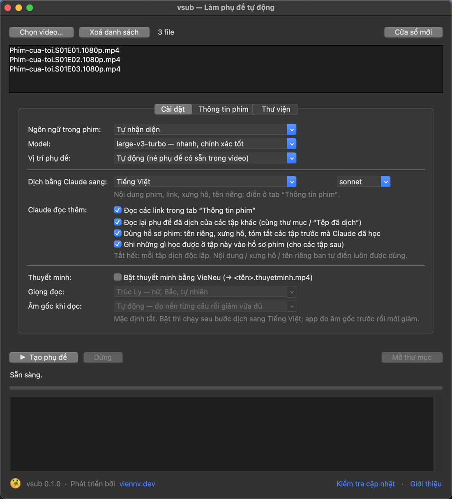
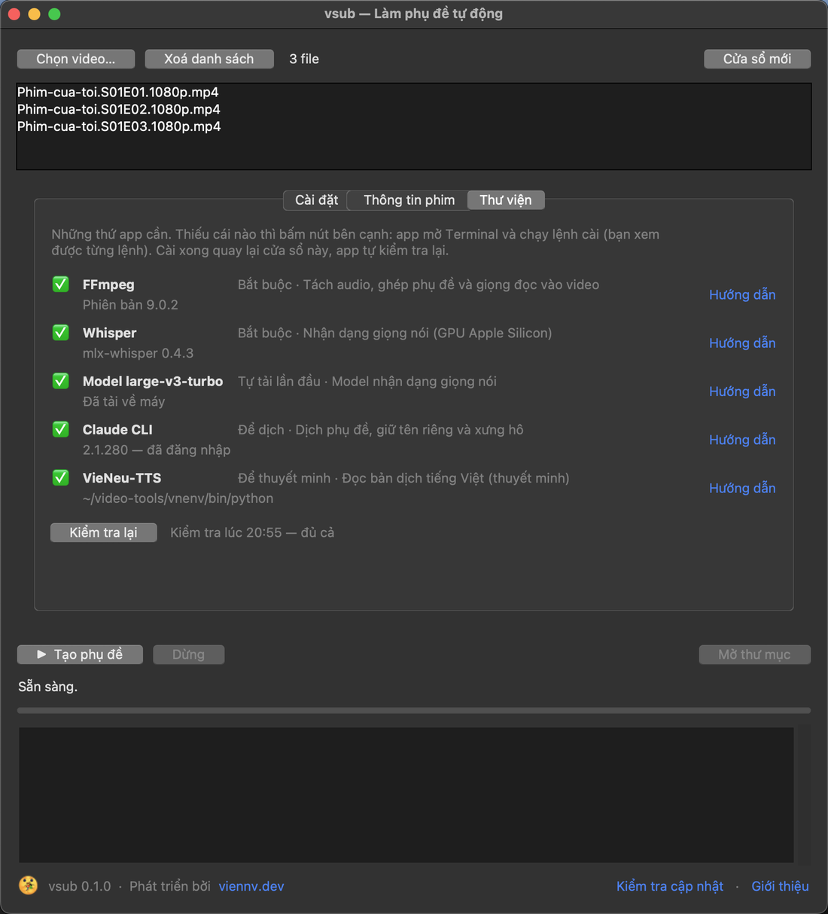

Tự động làm phụ đề, dịch và thuyết minh phim
Kéo thả video vào vsub: Whisper nhận dạng lời thoại ngay trên máy, Claude dịch giữ đúng tên riêng và cách xưng hô, VieNeu-TTS đọc thuyết minh tiếng Việt. Ra file .srt dùng được với IINA, VLC, Infuse, Plex.

Mọi thứ để có phụ đề tiếng Việt chuẩn
Từ nhận dạng lời thoại, cắt câu, dịch có ngữ cảnh đến đọc thuyết minh. Bạn chỉ cần kéo thả video.
Nhận dạng ngay trên máy
Whisper chạy offline: Mac chip M dùng GPU (mlx-whisper), Mac Intel và Windows dùng faster-whisper. Audio không rời khỏi máy.
Cắt câu chuẩn phụ đề
Tối đa 2 dòng, ngắt ở cuối câu và khi người nói dừng, căn giờ theo từng từ. Tự lọc câu Whisper hay “bịa” ở đoạn nhạc.
Dịch giữ tên riêng, xưng hô
Claude lập bảng tên riêng và bảng xưng hô theo từng cặp nhân vật (anh/em, tôi/cậu…), nhớ qua các tập của cùng một bộ phim.
Né phụ đề in sẵn
Video đã có phụ đề cứng ở dưới? vsub dò bằng OCR và tự đặt phụ đề mới lên phía trên để không đè lên nhau.
Thuyết minh tiếng Việt
VieNeu-TTS đọc bản dịch. App đo âm gốc trước rồi giảm vừa đủ ở từng câu. Xuất video có track thuyết minh và track âm gốc.
Tự cài, tự cập nhật
Tab “Thư viện” kiểm tra FFmpeg, Whisper, Claude, VieNeu và cài giúp khi thiếu. Có bản mới thì báo ngay, cập nhật bằng một nút bấm.
4 bước là xong
Làm cả bộ phim nhiều tập một lượt: các tập được xếp đúng thứ tự, tập sau dùng tên riêng và xưng hô của tập trước.
Kéo thả video
Thả từng file hoặc cả thư mục vào cửa sổ app (hoặc lên icon).
Chọn ngôn ngữ
Ngôn ngữ trong phim (hoặc để tự nhận) và ngôn ngữ muốn dịch sang.
Bấm Tạo phụ đề
Muốn thuyết minh thì bật thêm trong Cài đặt, chọn giọng đọc.
Nhận kết quả
phim.srt, phim.vi.srt và phim.thuyetminh.mp4 nằm cạnh video.

Thiếu gì, app cài giúp
Không cần mở Terminal. Tab “Thư viện” cho biết đang có gì, thiếu gì và cần nó để làm gì.
- FFmpeg, Whisper: bắt buộc, cài sẵn ngay lần mở đầu.
- Model Whisper: tự tải lần chạy đầu (large-v3-turbo 1,6 GB), báo trước dung lượng.
- Claude CLI: để dịch; cài và đăng nhập bằng một nút.
- VieNeu-TTS: chỉ cần khi bật thuyết minh; cài vào môi trường riêng rồi đọc thử một câu.
- Mọi lệnh cài đều hỏi trước và chạy trong cửa sổ dòng lệnh để bạn thấy rõ.
Cài đặt
Gói tải về rất nhẹ. Lần mở đầu, vsub tự cài Python và thư viện đúng cho máy bạn (cần mạng, mất vài phút, khoảng 1,3 GB).
🍎 macOS
- Tải vsub-mac-universal.zip, giải nén.
- Kéo Vsub.app vào thư mục Applications.
- Mở Vsub. Lần đầu, Terminal hiện ra để cài thư viện; xong thì app tự mở.
- FFmpeg chưa có thì vào tab “Thư viện” bấm Cài đặt (dùng Homebrew).
App chưa được Apple ký. Nếu macOS chặn: mở Cài đặt hệ thống → Quyền riêng tư & Bảo mật, bấm Vẫn mở. Hoặc chạy
xattr -dr com.apple.quarantine /Applications/Vsub.app
🪟 Windows
- Tải vsub-windows-amd64.zip, giải nén ra một thư mục cố định (ví dụ
C:\vsub). - Chạy Vsub.cmd. Lần đầu nó cài Python, thư viện và FFmpeg.
- Xong sẽ có shortcut vsub trên Desktop và Start Menu, app tự mở.
Nếu Windows SmartScreen cảnh báo: bấm More info → Run anyway (Thông tin thêm → Vẫn chạy). Windows chạy Whisper bằng CPU nên chậm hơn Mac chip M.
Hỏi đáp
Chưa thấy câu trả lời? Mở một issue trên GitHub.
vsub có mất phí không?
vsub miễn phí. Nhận dạng giọng nói và thuyết minh chạy trên máy bạn. Riêng bước dịch dùng Claude qua Claude Code, nên cần tài khoản Claude (gói của bạn quyết định giới hạn và chi phí). Không dịch thì không cần tài khoản.
Audio của phim có bị gửi lên mạng không?
Không. Whisper nhận dạng ngay trên máy. Khi dịch, chỉ phần chữ của phụ đề (và thông tin phim bạn tự điền) được gửi cho Claude.
Hỗ trợ những ngôn ngữ nào?
Whisper nhận dạng được hàng chục ngôn ngữ (Nhật, Hàn, Trung, Anh, Việt, Thái…). Claude dịch sang Tiếng Việt, English, 中文, 日本語, 한국어. Thuyết minh hiện có tiếng Việt, 15 giọng đọc VieNeu-TTS chọn sẵn trong app (nam, nữ; Bắc, Trung, Nam).
Một tập phim 45 phút mất bao lâu?
Trên Mac M1 Max: nhận dạng khoảng 15–25 phút tuỳ model, dịch vài phút, thuyết minh khoảng 5 phút. Máy chạy CPU (Windows, Mac Intel) chậm hơn.
Cập nhật bản mới thế nào?
Có bản mới, app hiện banner báo ở đầu cửa sổ. Bấm Cập nhật ngay để app tự tải và thay bản cũ, hoặc Tải thủ công để tự tải gói mới. Bạn cũng có thể bấm Kiểm tra cập nhật ở cuối cửa sổ bất cứ lúc nào.
Dùng bằng dòng lệnh được không?
Được: vsub phim.mp4 --lang ja --to vi --dub, vsub translate phim.srt --to vi, vsub doctor. Xem README trên GitHub.
Bắt đầu làm phụ đề ngay
Tải về, kéo thả video, bấm một nút.